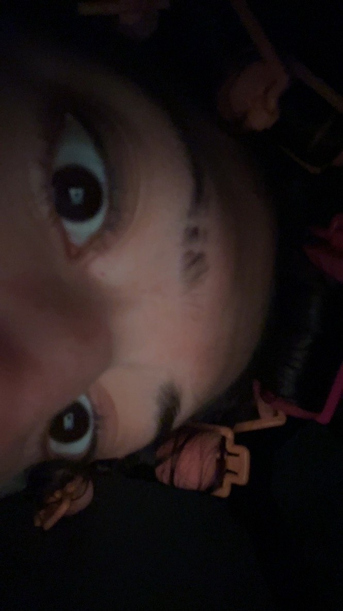
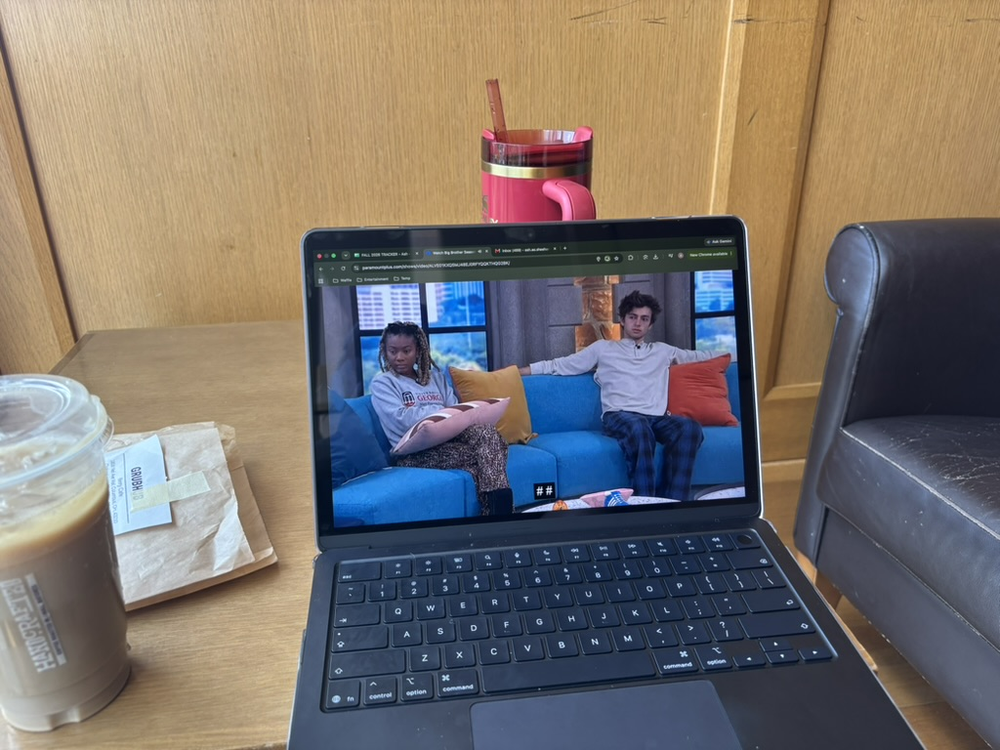
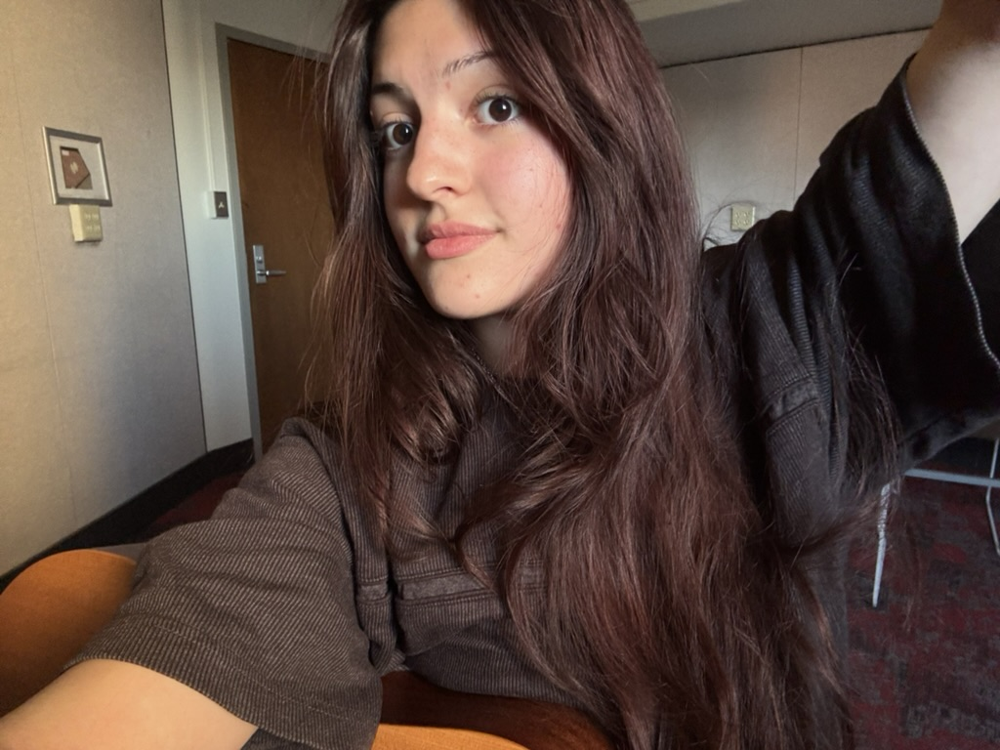
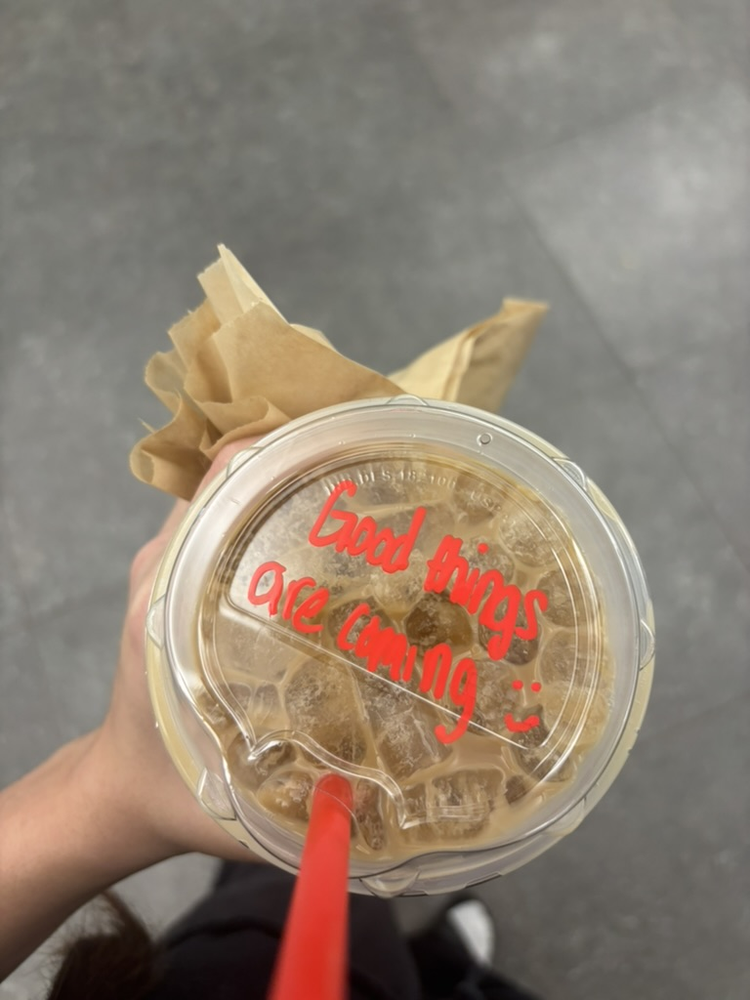
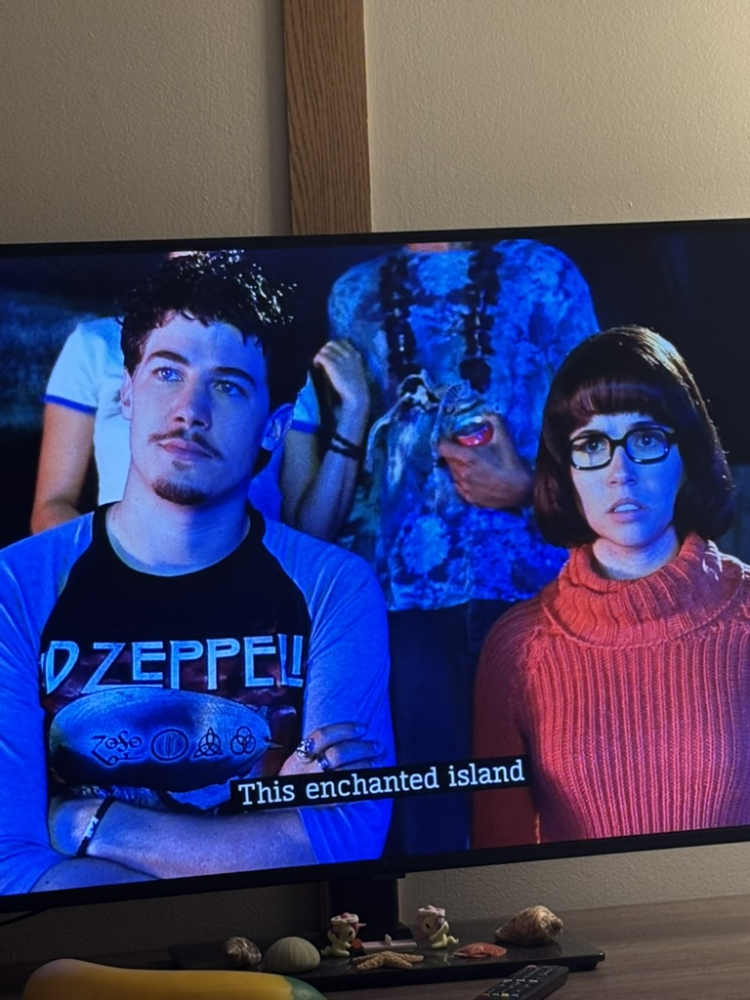

So How Was It?
4/5 - Pretty Decent

I did a lot of fun things! I have been really enjoying campus and eating a whole bunch of good food.
I tried the cajun food truck on campus recently and it was lovely.
I’ve also been having a good bit of ice cream and blondies bc they’re in all of the dining halls here.
Also, after having a bit of a rough start to the semester social-anxiety wise, I am happy to say that I feel very comfy on campus.
I think I've really worked out where my place is in the community here and I am excited to learn new things about myself.
My next battle to conquer is my indecision about my future career, but I have some time before I really need to figure that out.
How are my classes?
2.5/5 - bleh

I love half of my classes. I found out I love gender studies a whole lot more than I thought I would.
I love it and I WILL be double majoring.
I also really like bioethics, my prof is super duper chill and does a great job of explaining otherwise convoluted topics.
I don’t love ochem. It's a lot to handle sometimes 😭 but I've got this!!!
did anything interesting happen???
Halloweekend!!!
I had so much fun with halloweekend and loved dressing up.
We got to see a lot of funny costumes and got a decent number of compliments.
It was also the perfectttt temperature.
I feel like Halloween is when I feel most open to be myself.
It's definitely my favorite time of year. It may be over, but!! I get to look forward to my birthday and then St. Patty's Day AND Mardi Gras.
Weekly Picks
Activity - Guitar Playing

I had so much fun playing guitar this week. But, I wasn' able to play for a little while because I put on nails for my Halloween costume.
I am excited to play more. I think my goal is to play an open mic at a local cafe sometime in November!
Drink - Iced Pumpkin Chai With A Double Shot Of Espresso

I've started drinking coffee, I love a double shot of espresso.
But it makes me feel a little guilty in my Gender Studies and Bioethics lectures because they're my first classes of the day and I'm really annoying and talkative for like the first hour after my coffee.
One day (as you can see in the picture) the barista wrote a little message on my lid and it made me really happy.
Movie Extra - This Random Guy From Scooby Doo

I think I'm into mustaches now? I'm not sure this is new for me.
I also just really enjoyed watching the Scooby-Doo movies with my suitemates, they're so fun.
I feel like I never have a boring night with them.
I'm so happy we all ended up together!
We've also been binging sitcoms. So far, we've gotten through all of Parks & Rec and The Good Place. Now, we're on Unbreakable Kimmy Schmidt. I think Brooklyn 99 is next idk it's a very long list.
Your Queer,
Ash Sheehan
Certified Baddie & Diva